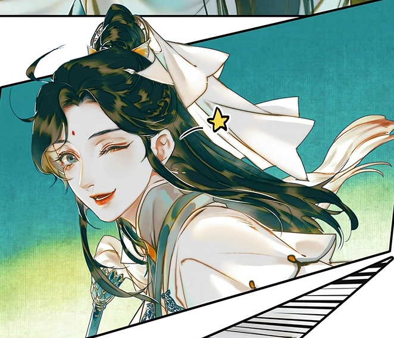
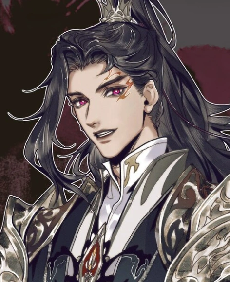
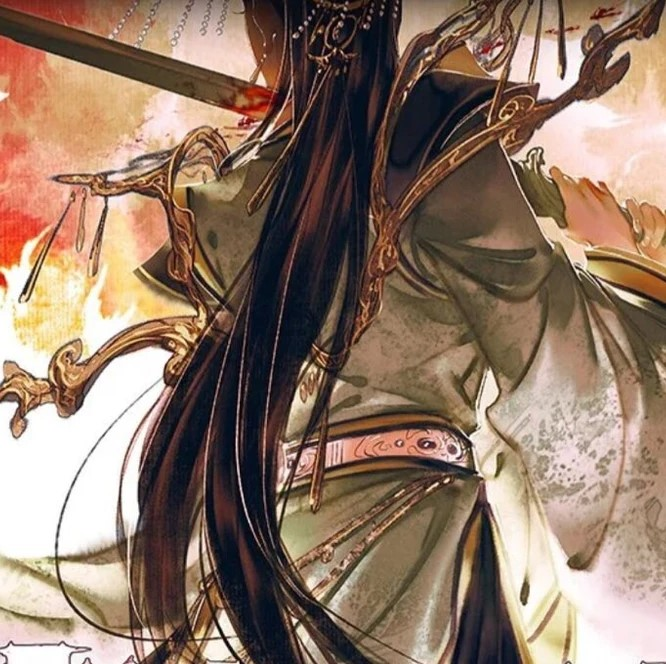
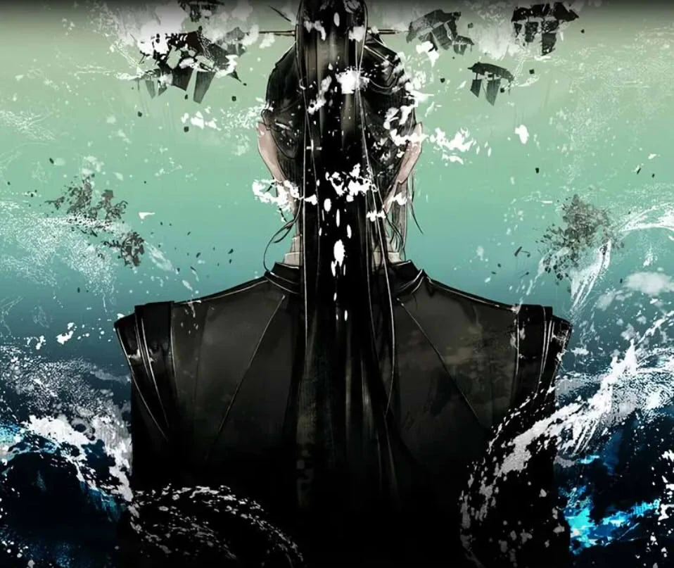
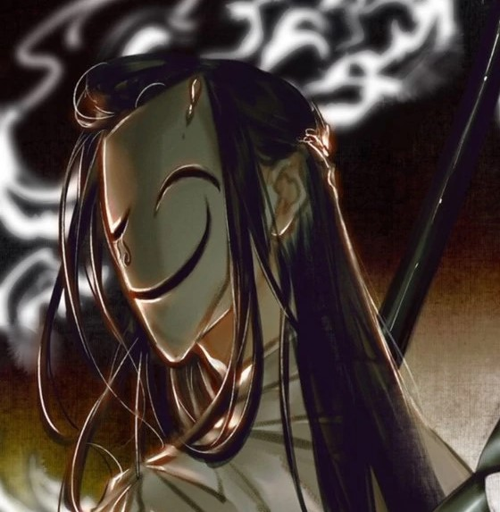
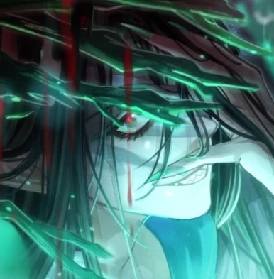

Heaven Official's Blessing (Chinese: 天官赐福, pinyin: Tiān Guān Cì Fú) is a Chinese novel series written by Mo Xiang Tong Xiu (Chinese: 墨香铜臭).
Eight hundred years ago, Xie Lian was the Crown Prince of the Xian Le kingdom. He was loved by his citizens and was considered the darling of the world. He ascended to the Heavens at a young age; however, due to unfortunate circumstances, was quickly banished back to the mortal realm. Years later, he ascends again only to be banished again a few minutes after his ascension.
Now, eight hundred years later, Xie Lian ascends to the Heavens for the third time as the laughing stock among all three realms. On his first task as a god thrice ascended, he meets a mysterious ghost who rules the ghosts and terrifies the Heavens, yet, unbeknownst to Xie Lian, this ghost king has been paying attention to him for a very, very long time.
----------
The Four Famous Tales (四名景, Sì Míng Jǐng) were highly praised anecdote stories of the time before the four Heavenly Officials from the Heavenly Court ascended - "The Young Lord Who Poured Wine", "The Crown Prince Who Pleased the Gods", "The General Who Broke His Sword", and "The Princess Who Slit Her Throat"
How the four tales came about was not particularly due to which officials had more power, but rather which one of their tales was more profound, spread the furthest amongst mortals who shared them with enthusiasm.
----------

Xie Lian, the Crown Prince Who Pleased The Gods, His Royal Highness the Crown Prince of Xianle, is the protagonist of Heaven Official's Blessing.
He was widely known throughout the Xianle nation as the beloved yet strange prince. Never showing interest in what was considered normal for a prince, he simply declared, "I want to save the common people!". Through practice, hard work, and insight beyond his years, he perfected his cultivation and ascended to the Heavens at the age of 17.[1]
After multiple unfortunate events, he was twice banished from the Heavens. 800 years later, he ascended for the third time.[1]
----------

Also one of the Four Famouse Tales, The Young Lord Who Pours Wine, Lord Wind Master Qingxuan (风师青玄, Fēng Shī Qīng Xuán), is one of the five Elemental Masters in the Heavenly Court. Since he is often worshiped as a female version of himself and often transforms into a woman, he was given the nickname Lady Wind Master.
----------

Pei Ming is also one of the Four Famous Tales: The General Who Broke His Sword. Titled as General Ming Guang, he is the Martial God of the North with nine thousand temples dedicated to his palace.
----------

The Princess Who Slit Her Throat, also known as Lord Rain Master, is one of the Elemental Masters in charge of rain and agriculture. Yushi Huang is renowned to be a recluse and live isolated from the heavens, so much so that no one in the Heavenly Court knows of her interests.[3] She rarely appears and simply works on the fields deep within the mountains.
----------
The Four Great Calamities (四大害, Sì Dà Hài) is the collective name given by the Heavenly Court to refer to four infamous ghosts that have caused the Heavenly Officials the most and greatest tribulations - "Crimson Rain Sought Flower", "Black Water Submerging Boats", "White-Clothed Calamity", and "Night-Touring Green Lantern".
----------

Crimson Rain Sought Flower, also referred to as San Lang (三郎, Sān Láng), is the deuteragonist and main love interest in Heaven Official's Blessing.
He's a ghost of Supreme rank and the most notorious of the Four Great Calamities, widely known as Crimson Rain Sought Flower (血雨探花, Xuè Yǔ Tàn Huā).
----------

He Xuan (贺玄, Hè Xuán) is a ghost of Supreme rank and one of the Four Great Calamities. He bears the title Black Water Submerging Boats and his domain is the Black Water Demon Lair.
----------

White No-Face (白无相, Bái Wúxiàng), titled as the White-Clothed Calamity (白衣祸世, Bái Yīhuò Shì), is the eldest and most powerful of the Four Great Calamities. Centuries ago, he had great influence in the fall of the Xianle kingdom.
----------

Qi Rong (戚容, Qī Róng) is a Savage level ghost who is close to becoming a Supreme. Despite not being a ghost of the highest rank, he is still regarded as one of the Four Great Calamities.
He's known to try and imitate the others, hanging corpses up in forests to copy Hua Cheng's crimson rain and eating humans to emulate He Xuan's vast ghost devouring.